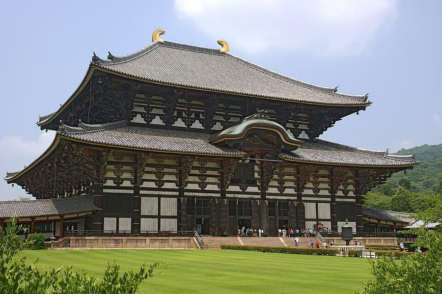
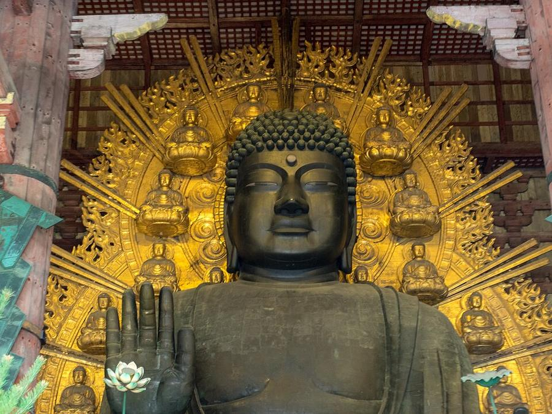
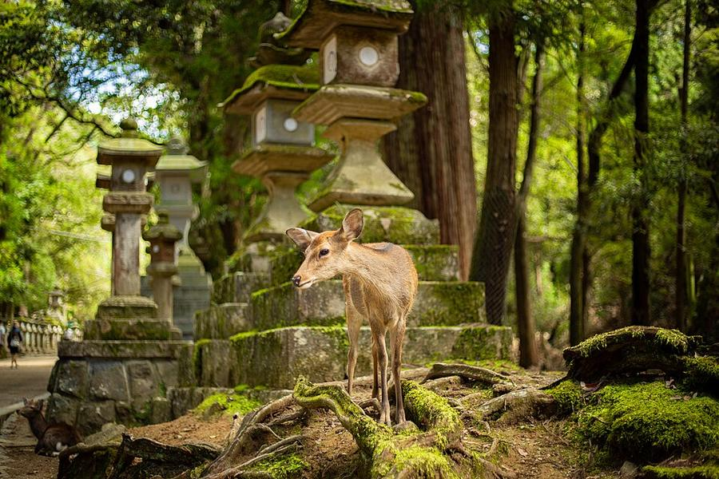
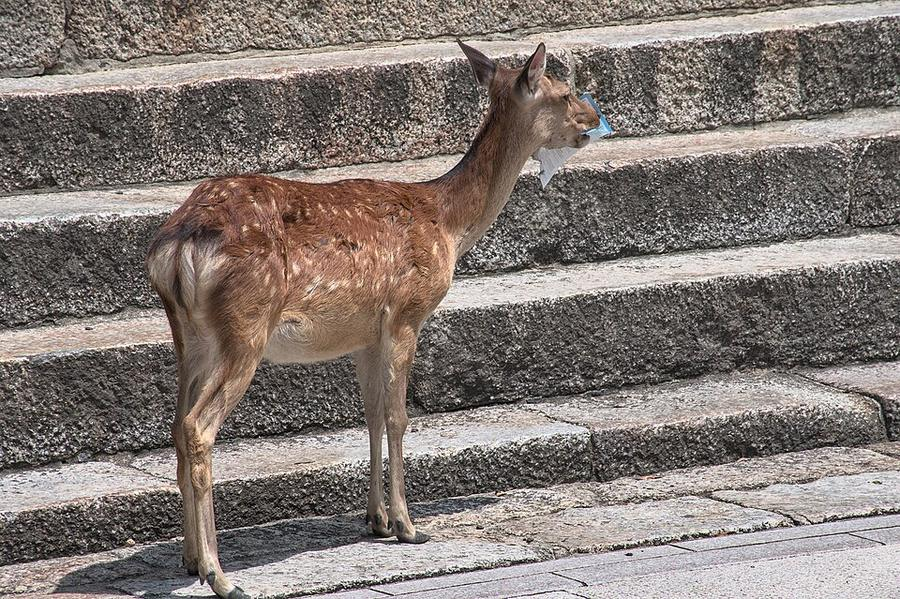

15Nara: Великий Будда и олени
奈良 東大寺大仏殿 / 奈良公園 · За город на полдня




Nara - столица Японии в VIII веке. Храм Todaiji (ЮНЕСКО): зал Daibutsuden высотой 48,7 м - одно из самых больших деревянных зданий в мире (нынешний 1709 года). Внутри Будда высотой ~15 м, освящён в 752 году.
В парке Nara больше 1 200 диких пятнистых оленей ходят свободно. Минус на эти дни: выходные, а с 24.10 по 9.11 идёт ежегодная выставка сокровищ Shosoin в Национальном музее Nara - людей будет очень много.
| Часы | Daibutsuden 7:30-17:30 (до конца октября) |
|---|---|
| Вход | 800 ¥, только наличными |
| Наши даты | 24.10-9.11 выставка Shosoin в Национальном музее Nara (билеты на время, 2 000 ¥) - толпы |
| На месте | полдня (4-5 ч с дорогой) |
| Дождь | ⛅ часть под крышей, в дождь - частично |
Источник часов и цен: todaiji.or.jp, narahaku.go.jp (офиц.)
Как добраться от отеля
- Быстрее всего: метро Midosuji до Namba (9 мин) + Kintetsu, rapid express от Osaka-Namba до Kintetsu-Nara, 36 мин. От станции до Todaiji ~21 мин пешком через парк.
- Без пересадок: JR Yamatoji Rapid со станции Osaka (под отелем), платформа 1, 50 мин до JR Nara, но оттуда до Todaiji дальше.
Видео


.jpg){kind=link}


Фото: Wikimedia Commons, автор и лицензия под каждым. Поезда: Yahoo!乗換案内 на 24-26.10.2026, пешие отрезки: OSRM. Часы и цены проверены 24.10.2026 03:16 JST. ← ко всем местам